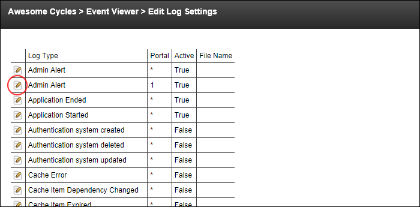

Managing Logged Events
How to enable, disable or edit the settings of logged events.
- Navigate to Admin >
 Event Viewer - OR - Navigate to a Log Viewer module.
Event Viewer - OR - Navigate to a Log Viewer module.
- Click the Edit Log Settings button. This opens the Edit Log Settings page and displays a list of the logged events.
- Click the Edit
 button beside the Log Type to be edited. This displays the details of the selected event.
button beside the Log Type to be edited. This displays the details of the selected event.

- At Logging Enabled, to enable logging of this event - OR -
-
to disable logging of this event and disable all fields in the Logging Settings section.
- Edit other settings as required.
-